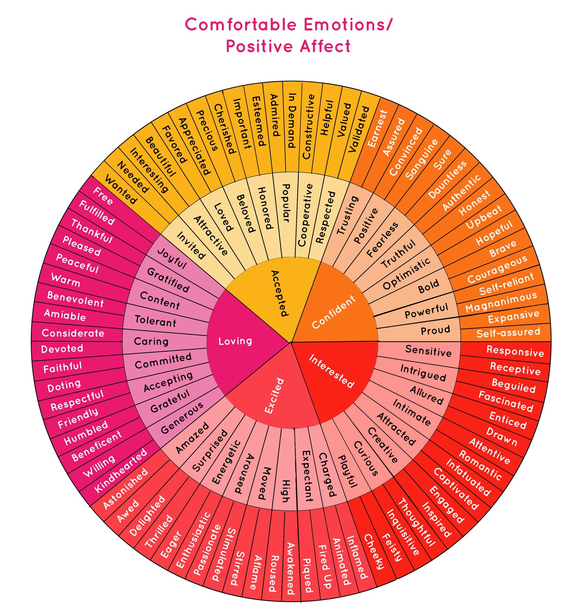
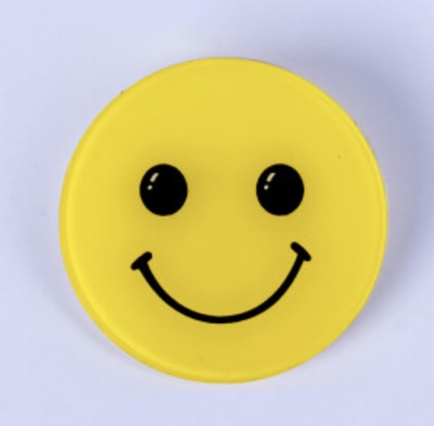

情感化设计¶
积极情绪会带来更高的积极性，让用户更愿意去学习、互动和解决问题。
十大积极情绪¶
常见的积极情绪有，开心、感恩、自豪、缘分、兴趣、希望、鼓舞、被爱等。
积极的情绪可以分为如下五类：
loving,
accepted,
confident,
interested,
and excited.

Source: https://humansystems.co/emotionwheels/
如何唤醒积极情绪¶
积极语言¶
降低 -> 负增长
工作很差 -> 工作还有很大的改善空间
分手 -> 重获自由
民办 -> 私立
落后 -> 古典
传统 -> 经典
情绪具身¶
积极的表情也会带来积极的情绪。
一个有趣的问题，如果你的面部微笑了，你的大脑会觉得有趣吗？答案是肯定的。
具身情绪观（embodying emotion）认为，情绪的身体表达和情绪信息的加工理解之间存在着相互作用：
模式特定的感觉，运动和情绪系统的神经细胞之间紧密相连，它们的激活使人感受到复杂的情绪体验。如面部肌肉与特定情绪有关：眼轮匝肌和颧肌在人微笑时激活，皱眉肌在人愤怒皱眉时激活，提肌与厌恶情绪有关。而躯体感觉皮层和上部脑干核团等脑组织也被证实与情绪体验有关（Damasio et al，2000）。
而当人们再次思考、回忆和理解相应的情绪时，原先存储了相关情绪信息的神经细胞就被再次激活，使人产生身临其境的感觉。进一步地，对表情和身体姿势进行操作，可诱发相应情绪状态（情绪体验），影响情绪信息加工（情绪理解）（Niedent-hal，2007；Wiswede，Mgnte，Krmer，&Rtisseler;，2009）。
早期的面部反馈假说（Facial FeedbackHypothesis）和躯体标记假说（Somatic MarkerHypothesis）支持了该理论。面部反馈假说认为，人为表现面部表情，能使相应的情绪产生或者增强。根据Antonio Damasio等提出的軀体标记假说，人当前身体状态通过本体感受（proprio-ception）的加工（例如，肌肉长度和关节的表征信息）和内感受（interoception）（表征全身组织的生理状态，例如热的、新陈代谢的）传输给大脑，在大脑中创建了独特的神经激活模式。这些神经激活模式代表无意识情绪，引导行为并且影响决策，而无意识情绪属于内隐情绪的范畴（Shafir，Taylor，Atkinson，Langenecker，&Zubieta;，2013）。内隐情绪，是指与情绪体验相关的认知表征的自动激活（Quirin，Kaz6n，&Kuhl;，2009）。
Source: 具身的情绪调节:面部表情对内隐情绪的影响，鲍婧 傅纳，2018
另外一个问题就是：
人看到真的笑脸和看到表情包，唤醒的情绪是一样的吗？答案也是一样的。
这也是很多便利店的收营员，佩戴微笑徽章的原因。
